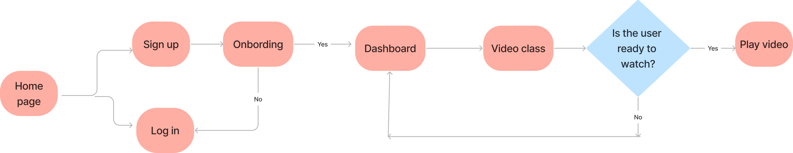

Research
To understnd the needs and goals of my target users, I conducted user research using a combination of methods such as interviews and competitive analysis.
User interview
I conducted online and in person interviews, to understand how the users feel, their needs and their motivations. I wanted to get more insights into their frustations, goals and what need to happen to improve the website.
I interviewed 5 individuals, age 21 - 50, who have a busy schedule life, begginers and aware of the benefits of yoga.
Empathy Map
Ann Gullar, 35, doctor, lives in California
The empathy map allowed me to identify the user pain points
- User wants to be able to choose the teacher
- Users are experiencing a lack of information on postures
- User want a platform to learn from home
- Users are experiencing a lack of guidance to choose their classes
Competitive Analysis
Next, I wanted to explore more the functionality and beneficts that are offered by platforms offering a similar kind of product. I compared a couple of important components of UI and product in general to discover the areas where Yogarythm experience could improve.
Glo
Daily Yoga
Yoga Studio
| Company |
CTA |
Fav icon |
Responsive Design |
Content
(variety, level, navigation...) |
Cleary defined benefits |
|
| Glo |
|
|
|
|
|
| Daily Yoga |
|
|
|
|
|
| Yoga Studio |
|
|
|
|
|
Reviews posted on their app
"So many classes are labeled level one and are actually more advanced than any begginer class I have ever taken."
"There are a ton of stand-alone classes to choose from. It is great to have all that choice, but for me it's too much choice"
"I have trouble navigating the site. I'd like to be able to set favorites there"
"I have used the app for several years now. I hope they will put new classes and series soon. I would like to see some other new variety to keep in interesting"
Persona
Based on research findings, I created a persona who represents the target of the users. I wanted to identify what frustates and blocks the user from getting what they need from the app
Defining the problem statment
After gathering the findings from the research, I define the problem statement.
Problem Statment:
Emily Hacker is a college teacher, who needs to learn yoga positions and find online classes for her level because it helps with stress reduction and develops a body awareness.
Flow Chart
Before starting the design I created a user flow for the most important task my persona will perform, it helps me to picture how users will move through the app.
User story: "As a college teacher I want to try many classes, so I will be able to find my favorite flow.""

Site Map
Based on the research and persona dicovery, I brainstormed, compiled and organized the necessary website content and functionality. I decided to include the most vital information to make it clean and easy to navigate.